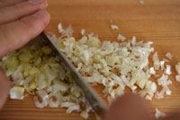
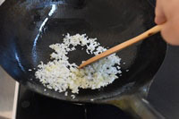
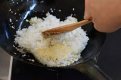
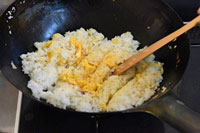
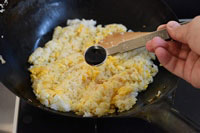

Cooking time: about 20 min
1. Chop the green onions and break the 2 eggs into a bowl and loosen them with chopsticks.

2. Fry eggs and immediately remove it into the bowl.
3. Fry the chopped green onions and Rice.
 4. Add the eggs and seasonings.
 